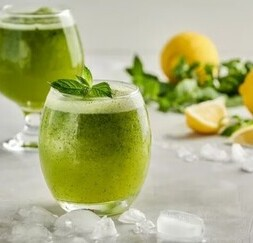
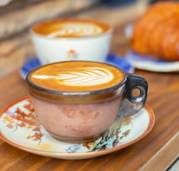
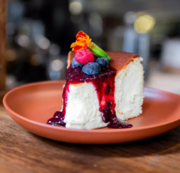

RECOMENDADOS DEL DÍA
-

Limonada Casera
Disfruta de nuestra limonada casera, preparada con jugo fresco de limones recién exprimidos y un toque de dulzura perfectamente equilibrado.
-

Café Capuccino
Deléitate con nuestra exquisita creación. Una mezcla perfecta de café espresso suave y espuma de leche cremosa, coronado con un toque de cacao en polvo.
-

Bebidas
Descubre nuestra selección de bebidas y déjate llevar por una experiencia de sabor inigualable. Desde el clásico café espresso hasta suaves tés de hierbas, pasando por refrescantes batidos de frutas, limonadas caseras y cócteles de café helado."
-

Dulces
Sumérgete en un mundo de placer y dulzura con nuestra exquisita pastelería dulce. Desde croissants de chocolate recién horneados hasta tartas de frutas frescas y donas glaseadas, nuestra pastelería dulce es un paraíso para los amantes de los postres.
-

Salados
Nuestra pastelería salada es una explosión de sabores y texturas que deleitará tu paladar. Desde los mas ricos sandwich, hasta las clasicas medias lunas con jamón y queso, nuestra selección de pastelería salada ofrece opciones deliciosas para satisfacer tu apetito.